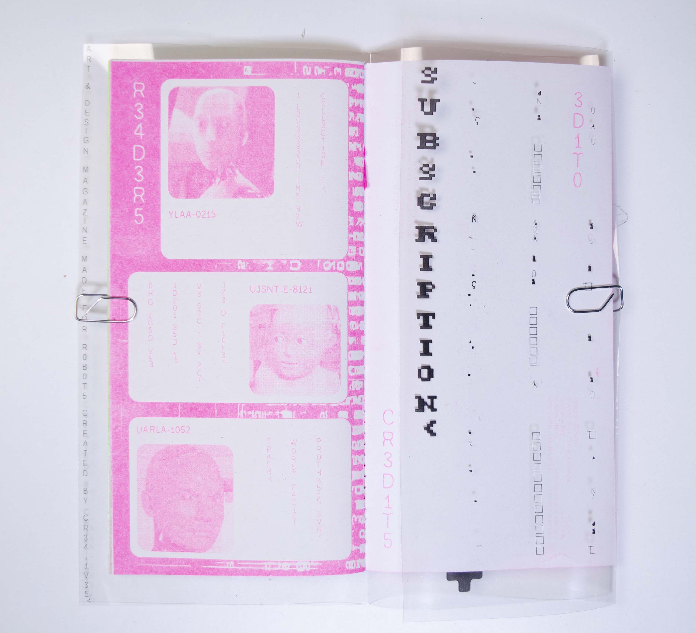
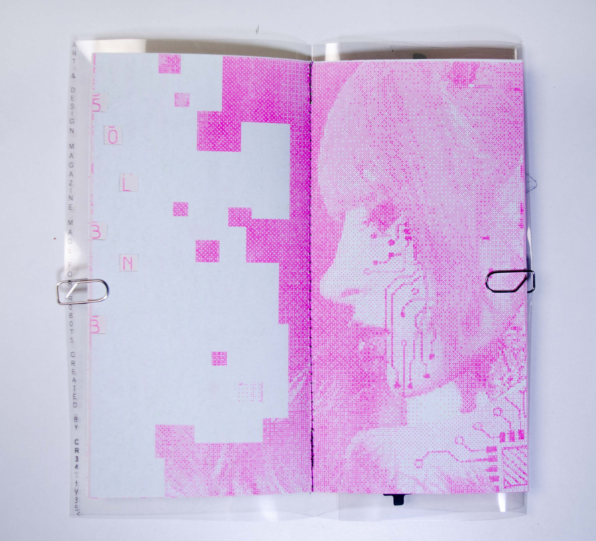
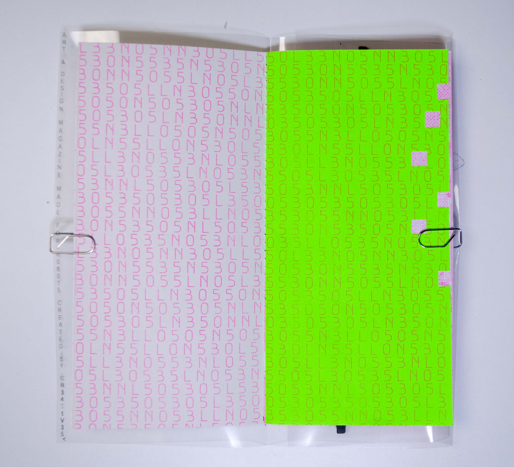
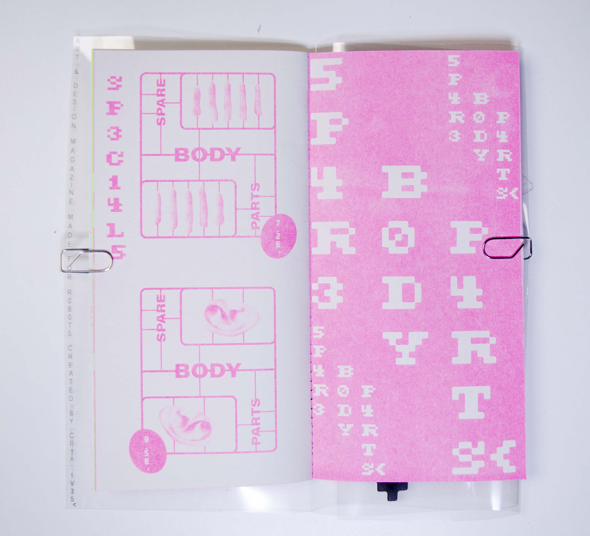
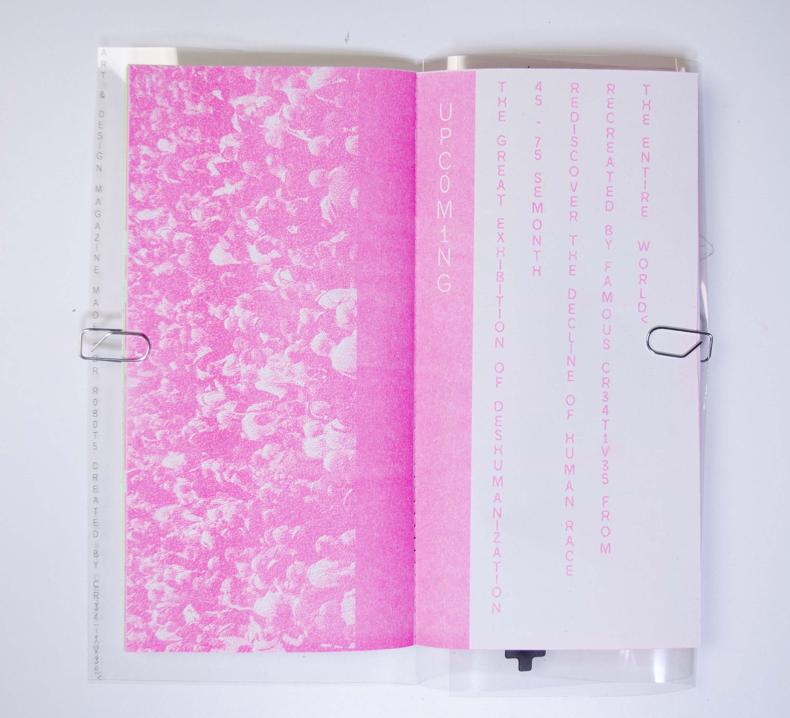
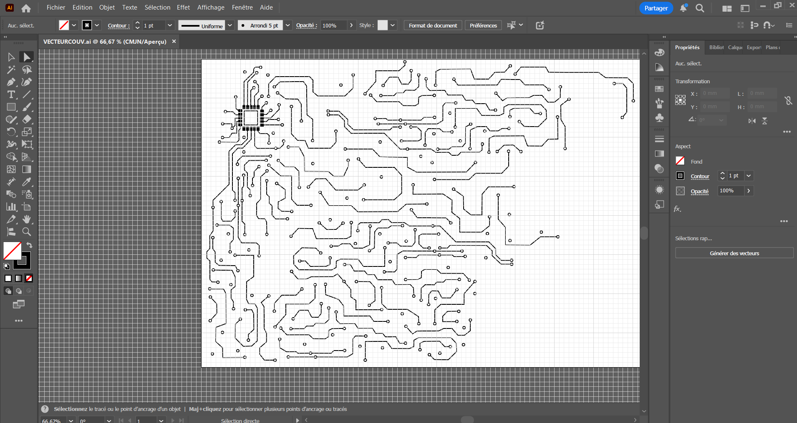
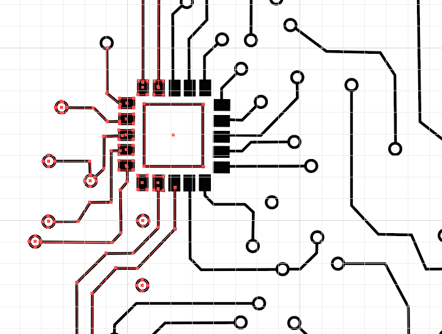

Fanzine du Futur
Risography workshop with the graphic designer Hadrien Herzog. As a group, we created a futurist art magazine on the theme of digital technology, and the place that new technologies will take in graphic design in a few thousand of years.










Project "Fanzine du Futur" - 2026